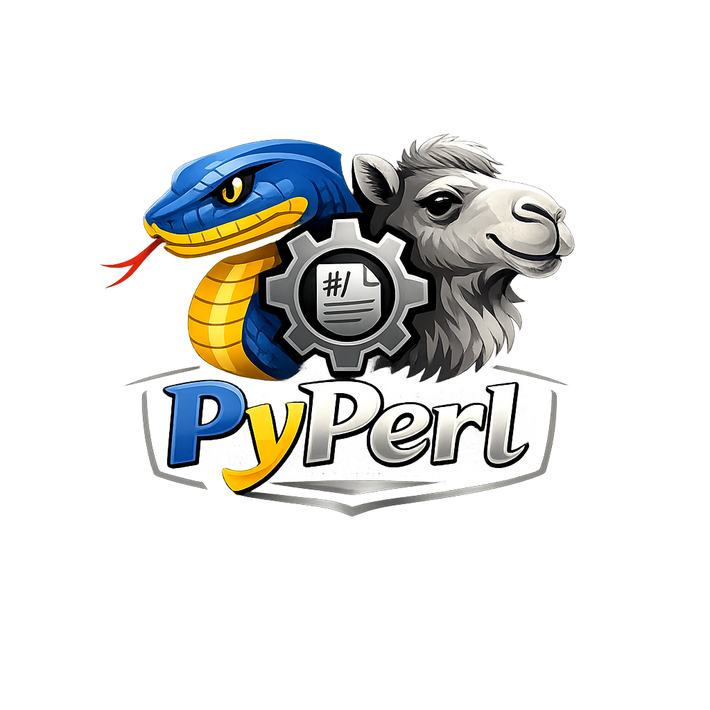

pyperl Documentation


{kind=link}

pyperl is a Python library that automatically installs and manages Perl, providing a clean interface for running Perl scripts from Python — with zero manual Perl setup required.
Key Features
Auto Perl Install: Detects system Perl or installs a portable version (Strawberry Perl on Windows, CPAN on Linux/Mac) automatically.
Cross-Platform: Works seamlessly on Windows, Linux, and macOS.
Run Perl Scripts: Execute any
.plscript with arbitrary arguments directly from Python.Portable & Bundled: Ships with bundled archives to work in offline or restricted environments.
Logging Control: Configurable verbosity from
"silent"to"debug".
Yes! This library is entirely free but it runs on coffee. Your ❤️ is important to keep maintaining this package. You can support in various ways, have a look at the sponsor page.
Quick Start
Install the package:
pip install pyperl
Basic usage:
from pyperl import pyperl
# Initialize — auto-detects or installs Perl
perl = pyperl(script="my_script.pl")
# Run a Perl script
result = perl.run()
print(result["stdout"])
For detailed usage examples, see the Quick Start Guide and Examples.